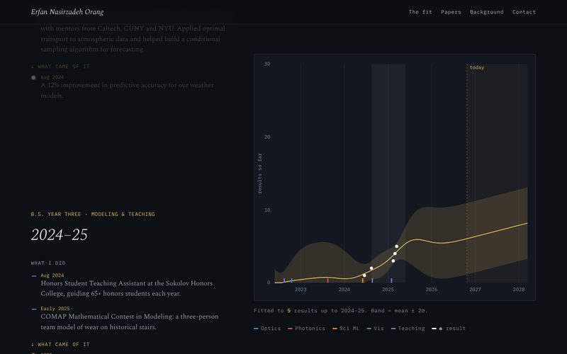
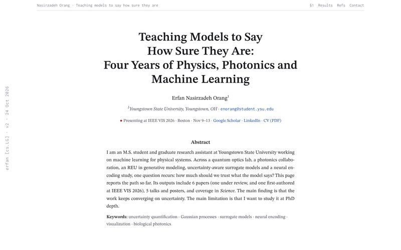
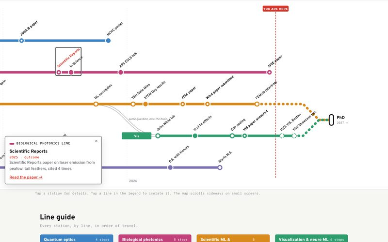
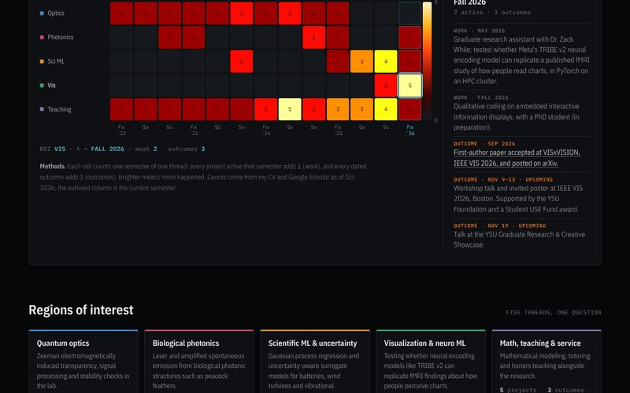
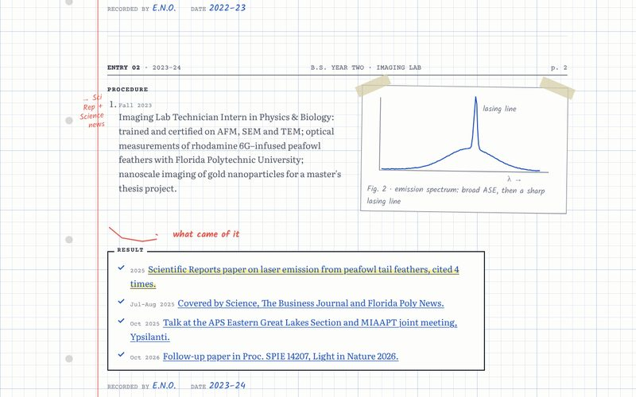

Same facts in every version, from one shared content file built on Google Scholar and the CV. Each concept presents them through something from the research itself.
Baseline: v2, the current site

A Distill-style scroll story. As you read each year, a Gaussian process refits to the real count of results; past today the band widens.

Title block, abstract, numbered sections, margin notes, Figure 1 of the path, a Table 1 counted from the data, hover-able citations and BibTeX.

Five threads as subway lines, milestones as stations, transfers at the turning points, and Sci ML plus Vis running on to a PhD terminus. Papers on a departures board.

An fMRI-style heat map: threads by semester, colored by real counts, with Work, Outcomes and All contrasts. Click any cell for what happened.

Dated entries on graph paper: procedure, a hand-drawn arrow, result. Each entry has a sketch of the actual physics that draws itself as you scroll.